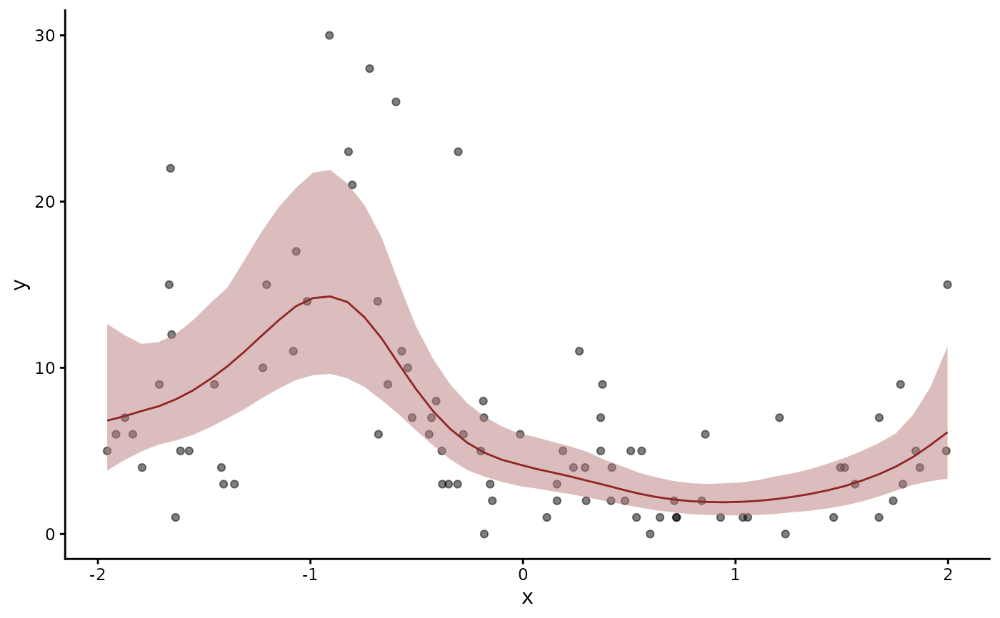
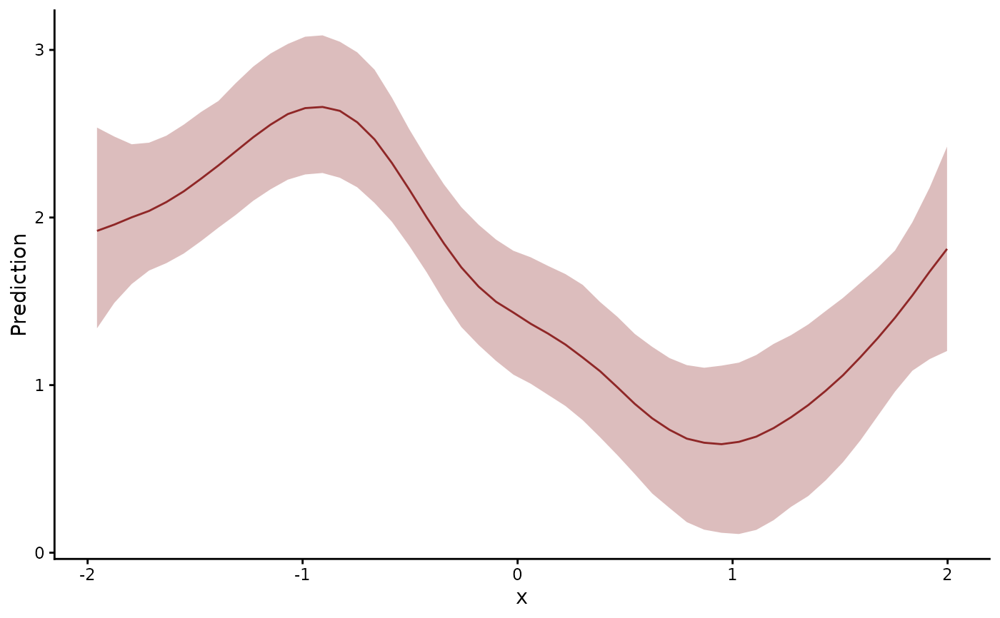

Display conditional effects of predictors for mvgam models
Source:R/conditional_effects.mvgam.R
conditional_effects.mvgam.RdPlot the conditional effects of one or more numeric / categorical
predictors in fitted mvgam models, including up-to-three-way
interactions. A thin wrapper around
marginaleffects::plot_predictions() that auto-enumerates the
model's term labels (across both observation and trend submodels)
and produces one ggplot per term.
as.data.frame.mvgam_conditional_effects() returns the underlying
prediction grid as a long-format data.frame (one row per grid
point, per effect, per response). Columns are resp (present only
when the fit is multivariate), effect (the primary conditioning
variable name), estimate__, lower__, upper__, followed by
whichever additional grid columns marginaleffects populated. The
three estimate columns take brms's names, as in the frame
conditional_smooths.mvgam() returns.
Use this to reach the raw numbers when you want to build a custom plot, overlay several fits, or compare against a known truth. It removes the need to know whether the fit was univariate or multivariate before extracting.
Usage
# S3 method for class 'mvgam'
conditional_effects(
x,
effects = NULL,
type = "expected",
points = FALSE,
rug = FALSE,
process_error = FALSE,
series = NULL,
resp = NULL,
...
)
# S3 method for class 'mvgam_conditional_effects'
plot(x, plot = TRUE, ask = FALSE, ...)
# S3 method for class 'mvgam_conditional_effects'
print(x, ...)
# S3 method for class 'mvgam_conditional_effects'
as.data.frame(x, row.names = NULL, optional = FALSE, ...)Arguments
- x
An object of class
mvgam_conditional_effects.- effects
Optional character vector of effects to plot. If
NULL(the default), all main effects and interactions in the formula are detected automatically.- type
Scale of predictions. One of
"response"(outcome scale with observation-process noise),"link"(link-scale linear predictor),"expected"(E[Y]; default), or one of the family-specific scales handled bypredict.mvgam():"variance","latent_state","detection". Forocc()andnmix(),"latent_state"plots the state apart from detection: the probability of occupancypsi, or the expected abundancelambda."detection"plots the detection probabilityp.- points
Logical or numeric. If
TRUE(or a non-zero alpha between 0 and 1), raw observations are overlaid on the plot. The overlay applies where the drawn quantity shares the observations' scale, which coverstype = "response"andtype = "expected".- rug
Logical. If
TRUE, rug tick marks are drawn along the axes, on the same scales the points overlay applies to.- process_error
Logical. Passed to
plot_predictions()/get_predict.mvgam. With the defaultFALSEthe trend contributes its deterministic submodel. The panel then shows the covariate effect with the latent process held out.TRUEintegrates over the trend's dynamics, which widens the band by the latent state's own spread.- series
Which series the panels show.
NULL(the default) draws one panel per effect at the reference series, as brms does for a grouping factor. A factor model whosetrend_formulauseslv_axis()gives each series its own effect.NULLthen draws a panel per series."all"draws a panel per series for any model. A single integer or character value picks one series and filters the prediction grid to its observations.- resp
Character specifying which response variable for multivariate models. NULL (default) returns predictions for all responses.
- ...
Ignored.
- plot
Logical. If
TRUE(default), draws each plot; otherwise returns the list invisibly so callers can post-process.- ask
Logical. If
TRUE, prompts before each new plot.- row.names, optional
Ignored.
Value
An object of class mvgam_conditional_effects: a named
list with one ggplot per effect, drawn by the plot and
print methods.
Invisibly, a flat named list of ggplot objects, as
brms::conditional_effects() plots return one. A multivariate
fit's panels are named <response>.<effect>, response by
response.
References
Arel-Bundock, V., Greifer, N. and Heiss, A. (2024). How to interpret statistical models using marginaleffects for R and Python. Journal of Statistical Software, 111(9):1-32. doi:10.18637/jss.v111.i09
See also
marginaleffects::predictions() returns the plotted
values as a data frame. marginaleffects::avg_slopes() and
marginaleffects::avg_comparisons() summarise effects as numbers.
posterior_epred.mvgam() computes the expected values the panels
draw. pp_check.mvgam() checks the fit against the data. The
overview vignette interprets
effects in both formulas.
Other predictions:
conditional_smooths.mvgam(),
fitted.mvgam(),
hindcast.mvgam(),
posterior_epred.mvgam(),
posterior_linpred.mvgam(),
posterior_predict.mvgam(),
posterior_smooths.mvgam(),
predict.mvgam(),
predictive_error.mvgam(),
predictive_interval.mvgam()
Examples
# \dontrun{
set.seed(13)
simdat <- sim_mvgam(family = poisson(), n_series = 1L,
n_timepoints = 120L, trend_model = AR())
mod <- mvgam(y ~ s(x), trend_formula = ~ AR(p = 1),
data = simdat$data_train,
family = poisson(),
chains = 2, silent = 2)
#> Warning: 9 of 2000 (0.0%) transitions ended with a divergence.
#> See https://mc-stan.org/misc/warnings for details.
# The effect of x on the expected count, with the observations
conditional_effects(mod, points = TRUE)

# The same effect on the log link scale
conditional_effects(mod, type = "link")

# The average slope of the expected count with respect to x
marginaleffects::avg_slopes(mod, variables = "x", type = "expected")
#>
#> Estimate 2.5 % 97.5 %
#> -1.64 -3.8 0.0399
#>
#> Term: x
#> Type: expected
#> Comparison: dY/dX
#>
# Next: marginaleffects::plot_predictions() draws custom effect
# displays, such as one covariate conditional on another
# }